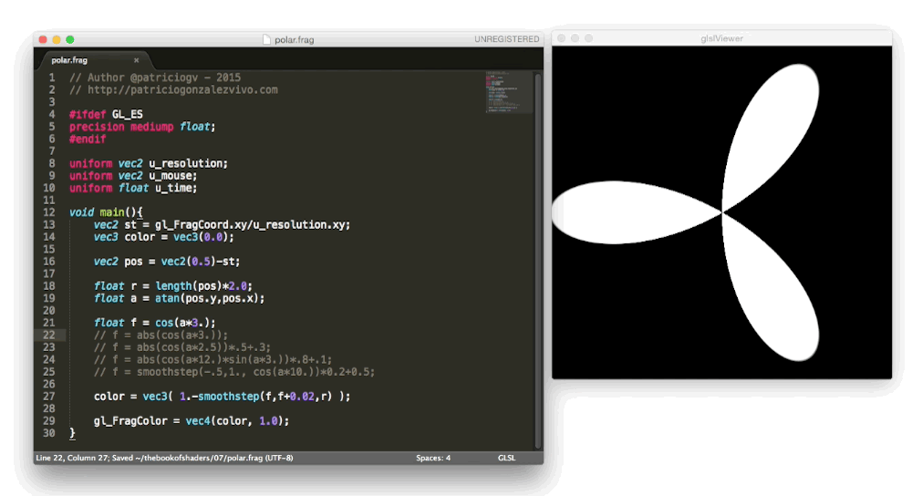
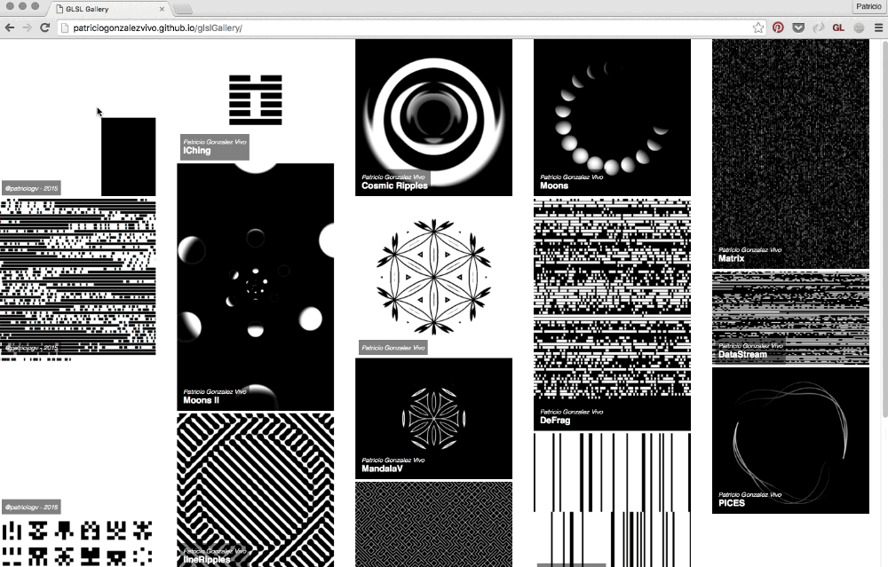

运行你的 shader
我制作了一套工具生态系统，用于创建、显示、分享与使用 shader，以此作为本书结构及我艺术实践的一部分。这些工具是跨平台的，无需更改代码就能在 Linux、MacOS、Windows、树莓派 和浏览器上表现一致。
在浏览器上运行你的 shader
显示: 本书中所有实例都可以用 glslCanvas 来显示，这样一来，运行独立的 shader 程序就变得非常简单.
<canvas class="glslCanvas" data-fragment-url=“yourShader.frag" data-textures=“yourInputImage.png” width="500" height="500"></canvas>
如你所见, 只需要创建一个类名为 class="glslCanvas" 的 canvas 元素，并将你的 shader 链接放在 data-fragment-url 中. 在 这里 可以了解更多.
你可能会像我一样想要从命令行直接运行 shader，那你需要看看 glslViewer。这个应用程序可以将 shader 放到 bash 脚本或 unix 管道里，并且像 ImageMagick 一样使用它。此外，glslViewer 也是一个在 树莓派 上编译 shader 的好办法, 这就是 openFrame.io 用它来展示shader 作品的原因。在 这里 可以了解该应用程序的更多信息。
glslViewer yourShader.frag yourInputImage.png —w 500 -h 500 -s 1 -o yourOutputImage.png
创建: 为了介绍 shader 编码的经验，我制作了在线编辑器 glslEditor。本书的实例中内嵌了这个编辑器。这个编辑器有很多好用的小组件，使编写 glsl 代码的体验更加直观。你也可以在 editor.thebookofshaders.com/ 上将其作为独立的 Web 应用运行。在 这里 了解更多。
如果你更喜欢用 SublimeText 离线编程，你可以安装 package for glslViewer。 在 这里 了解更多.

分享: 在线编辑器 (editor.thebookofshaders.com/) 可以分享你的 shader！内嵌版和独立版都有导出按钮，你可以通过这个按钮获得 shader 的唯一链接。编辑器也可以直接将 shader 导出到 openFrame.io。

使用: 分享代码只是分享 shader 作品的开始！除了导出到 openFrame.io，我还制作了使用 shader 的工具 glslGallery，它可以将 shader 放入画廊中，以便嵌入到任何网站. 在 这里 了解更多.

在你喜欢的框架上运行你的 shader
如果你使用过这些这些框架: Processing, Three.js, OpenFrameworks 或 SFML, 你可能更愿意在你觉得舒服的这些平台上编写 shader。下面将会介绍在这些框架中，用本书范式编写 shader 的方法。 (在 本章节的 GitHub 仓库中, 你能找到这三个框架的完整源码.)
Three.js
为人谦逊而非常有才华的 Ricardo Cabello (也就是 MrDoob )和许多贡献者 一起搭了可能是 WebGL 最知名的平台，Three.js。你可以找到无数程序示例，教程，书籍，教你如何用这个 JavaScript 库做出酷炫的 3D 图像。
下面是一个你需要的例子，教你用 three.js 玩转 shader。注意 id="fragmentShader"脚本，你要把下面的代码拷到里面。
下面是一个 HTML 和 JS 的示例，
<body>
<div id="container"></div>
<script src="js/three.min.js"></script>
<script id="vertexShader" type="x-shader/x-vertex">
void main() {
gl_Position = vec4( position, 1.0 );
}
</script>
<script id="fragmentShader" type="x-shader/x-fragment">
uniform vec2 u_resolution;
uniform float u_time;
void main() {
vec2 st = gl_FragCoord.xy/u_resolution.xy;
gl_FragColor=vec4(st.x,st.y,0.0,1.0);
}
</script>
<script>
var container;
var camera, scene, renderer, clock;
var uniforms;
init();
animate();
function init() {
container = document.getElementById( 'container' );
camera = new THREE.Camera();
camera.position.z = 1;
scene = new THREE.Scene();
clock = new THREE.Clock();
var geometry = new THREE.PlaneBufferGeometry( 2, 2 );
uniforms = {
u_time: { type: "f", value: 1.0 },
u_resolution: { type: "v2", value: new THREE.Vector2() }
};
var material = new THREE.ShaderMaterial( {
uniforms: uniforms,
vertexShader: document.getElementById( 'vertexShader' ).textContent,
fragmentShader: document.getElementById( 'fragmentShader' ).textContent
} );
var mesh = new THREE.Mesh( geometry, material );
scene.add( mesh );
renderer = new THREE.WebGLRenderer();
renderer.setPixelRatio( window.devicePixelRatio );
container.appendChild( renderer.domElement );
onWindowResize();
window.addEventListener( 'resize', onWindowResize, false );
}
function onWindowResize( event ) {
renderer.setSize( window.innerWidth, window.innerHeight );
uniforms.u_resolution.value.x = renderer.domElement.width;
uniforms.u_resolution.value.y = renderer.domElement.height;
}
function animate() {
requestAnimationFrame( animate );
render();
}
function render() {
uniforms.u_time.value += clock.getDelta();
renderer.render( scene, camera );
}
</script>
</body>
Processing
2001年由Ben Fry 和 Casey Reas 创建，Processing是一个极其简约而强大的环境，非常适合初尝代码的人（至少对于我来是这样）。关于 OpenGL 和视频，Andres Colubri为 Processing 平台做了很重要的更新，使得环境非常友好，玩 GLSL shader 比起以前大大容易了。Processing 会在你的 sketch 的 data 文件夹搜索名为 "shader.frag" 的文件。记得把这里的示例代码拷到你的文件夹里然后重命名 shader。
PShader shader;
void setup() {
size(640, 360, P2D);
noStroke();
shader = loadShader("shader.frag");
}
void draw() {
shader.set("u_resolution", float(width), float(height));
shader.set("u_mouse", float(mouseX), float(mouseY));
shader.set("u_time", millis() / 1000.0);
shader(shader);
rect(0,0,width,height);
}
在 2.1 版之前的版本运行 shader，你需要在你的 shader 文件开头添加以下代码：
#define PROCESSING_COLOR_SHADER。所以它应该看起来是这样：
#ifdef GL_ES
precision mediump float;
#endif
#define PROCESSING_COLOR_SHADER
uniform vec2 u_resolution;
uniform vec3 u_mouse;
uniform float u_time;
void main() {
vec2 st = gl_FragCoord.st/u_resolution;
gl_FragColor = vec4(st.x,st.y,0.0,1.0);
}
更多 Processing 的 shader 教程戳 tutorial。
openFrameworks
每个人都有自己的舒适区，我的则是openFrameworks community。这个 C++ 框架打包了 OpenGL 和其他开源 C++ 库。在很多方面它和 Processing 非常像，但是明显和 C++ 编译器打交道一定比较麻烦。和 Processing 很像地，openFrameworks 会在你的 data 文件夹里寻找 shader 文件，所以不要忘记把你的后缀 .frag 的文件拷进去，加载的时候记得改名。
void ofApp::draw(){
ofShader shader;
shader.load("","shader.frag");
shader.begin();
shader.setUniform1f("u_time", ofGetElapsedTimef());
shader.setUniform2f("u_resolution", ofGetWidth(), ofGetHeight());
ofRect(0,0,ofGetWidth(), ofGetHeight());
shader.end();
}
关于 shader 在 openFrameworks 的更多信息请参考这篇excellent tutorial，作者是 Joshua Noble。